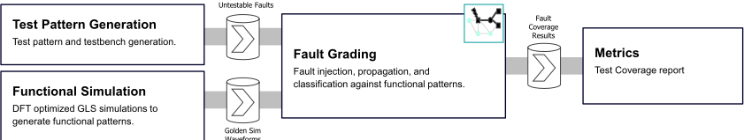
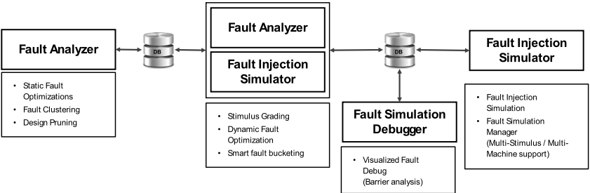
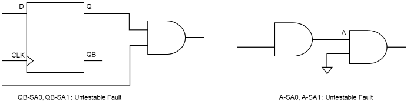
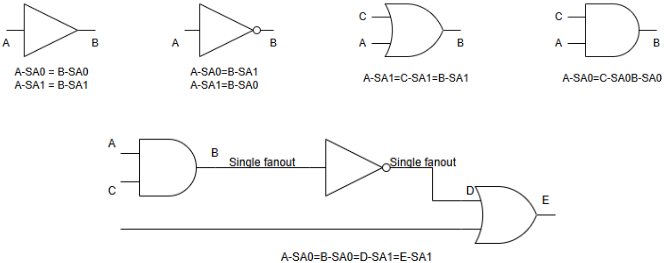
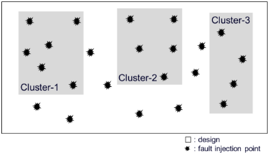
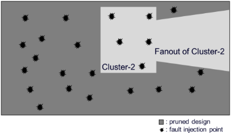
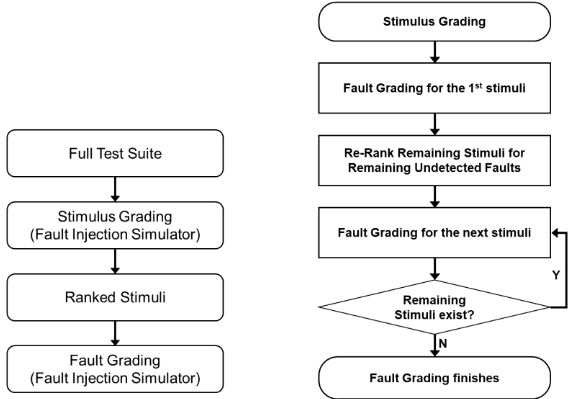
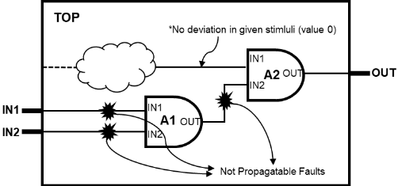
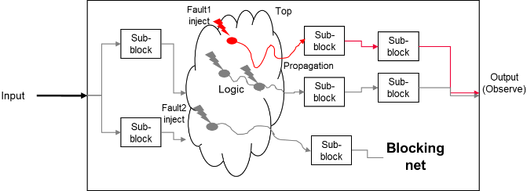
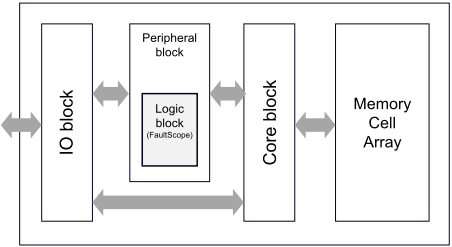

面向存储器设计的 Functional Fault Grading 流程优化
随着工艺微缩随机缺陷增多，存储器因面积与布线开销无法采用 scan DFT，post-silicon 筛选依赖 functional patterns，其缺陷检测能力需用 fault injection simulation 定量评估，但故障数与 pattern 数乘积级的仿真开销使穷举仿真不可行。论文提出一套优化驱动的 functional fault grading 流程，集成 static fault filtering、fault collapsing、instance-based fault clustering、design pruning、stimulus grading、dynamic fault optimization 与并行仿真管理，并实现于 Siemens EDA 商用 fault injection simulator。在 production-grade NAND Flash 门级网表的 peripheral instance 上，static+dynamic 优化将故障规模平均降至原来的 40.4%，clustering+pruning 节省约 70% 内存并降低 61.0% runtime，整体取得 3.7x 仿真加速，7 个 functional testbench 的 fault detection rate 为 72.2%。作者强调方法可推广至 scan-based ATPG 与 SoC 逻辑环境，并有望支撑 Functional Safety 验证流程。
存储器设计受严格面积约束，无法承受 scan flip-flop 替换与 scan chain 布线带来的面积、功耗、时序代价，post-silicon 测试主要依赖 functional test patterns；为量化这些 pattern 的缺陷检测能力需做 fault injection simulation，但其计算复杂度约为故障数与 pattern 数的乘积，且 functional patterns 天然长而复杂，导致 TAT 过高，成为 coverage closure 的主要瓶颈。
提出优化驱动的 functional fault grading 流程：(1) Static Fault Optimization——识别并剔除 untestable faults，在 device 与 functional 级做 fault collapsing 生成 primary faults；(2) instance-based Fault Clustering——按 fanout、influencing logic 等结构属性分组，作为局部优化与并行调度的基础；(3) Design Pruning——为 golden/faulty 仿真裁剪出从 primary inputs 到 observation points 的相关 logic cone 子电路，并在 cluster 级与 clustering 协同；(4) Stimulus Grading——以 golden 仿真中注入点是否发生 logic transition 定义 injectability，按可激活故障数对 testbench 排序并动态重排；(5) Dynamic Fault Optimization——按 stimulus 剔除 non-injectable 与 blocked faults；(6) 分布式并行 fault simulation 管理；(7) 基于 blocking net analysis 的可视化 fault debug。全部实现于 Siemens EDA 商用 fault injection simulator toolset。
从目标设计抽取 5,302 个 port-level faults（含 stuck-at-0 与 stuck-at-1）；fault collapsing 合并 2,278 个逻辑等价故障，static filtering 识别 36 个 untestable faults，故障列表降至 2,988 个（原规模的 56.4%）
dynamic optimization 平均每个 testbench 排除 264 个 faults；static+dynamic 合计将故障规模平均降至原来的 40.4%
stimulus grading 中 TB1 排名最高，可激活 2,494 个 faults
fault clustering + design pruning 相比 baseline 节省约 70% 内存；在 160 并行线程、2,988 faults、7 个 testbench 相同条件下，runtime 从 66,667 秒降至 31,611 秒，两者 fault detection rate 均为 67.2%，合计 runtime 降低 61.0%
并行仿真 runtime 随线程数增加而下降，在约 160 线程处趋于饱和，超过后因线程管理开销略有回升
7 个 functional testbench 整体 fault detection rate 为 72.2%；未优化总 runtime 114,214 秒，全优化后 30,932 秒，对应 3.7x 提升
在已有 fault collapsing、dynamic fault elimination 与并行化研究 [2][3] 基础上，新增 design pruning 与 stimulus grading，并强调 pruning 与 clustering 在 cluster 级协同放大收益；与传统主要面向 scan-based DFT/ATPG pattern 的 fault simulation 不同，该流程面向无 scan 结构的存储器 functional patterns，已在商用 fault injection simulator 中产品化落地，并配套基于 blocking net analysis 的可视化 fault debug。
相关度级别：high
命中能力域：2.6 Fault simulation/Z01X/TFMEA | 2.1 DFT/ATPG/门级验证
理由：论文核心正是 2.6 域定义的'基于功能 stimulus/pattern 的 fault injection、fault grading 与 detectability 分析'：以 functional testbench 驱动门级 fault injection，产出 fault detection rate 与 untestable/blocked/non-injectable 故障分类，可直接支撑团队 FuSa TFMEA/FMEDA 中 functional pattern 覆盖与 diagnostic coverage 论证，属直接命中。同时其 stuck-at 故障建模、fault collapsing、fault classification、门级网表仿真，以及'可推广到 scan-based ATPG 环境'的论断，与 2.1 域的 fault grading/fault classification/门级验证能力对应，可作为 ATPG coverage 之外的 coverage compensation 手段。论文未涉及 ISO 26262 安全机制设计、Safety Manual 或 FMEDA 文档本身（不足以命中 2.5）；其'自动化'是仿真流程与资源调度优化，而非 JAMA/FMEDA export 或 AI/agent 辅助（不命中 2.7）；验证对象为 NAND Flash 而非团队 HBM4/UCie/LPDDR 产品线，但方法层面可迁移。
建议动作：深入精读并做内部分享
Euisang Yoon * , Arun Gogineni * , Saurabh Srivastava * , Eunjong Oh , Seongwook Lee
Geonbeom Kwon * , Yoseop Lee , Hyojin Choi
{eunjong.oh, seonguki.lee, yoseop.lee, hyojin9.choi}
† 三星电子有限公司（Samsung Electronics Co., Ltd.），韩国 @samsung.com
† † , Sungyun Yoo * , † †
{euisang.yoon, arun.gogineni, saurabh.s, sungyun.yoo,
*Siemens EDA，{韩国，美国} geonbeom.kwon} @siemens.com
摘要 - 随着半导体工艺技术的不断微缩，随机缺陷的发生频率不断上升，使得硅后缺陷筛选变得日益关键。虽然结构测试技术已在逻辑器件中得到广泛采用，但其在存储器件中的应用受到面积开销的制约。因此，存储器硅后测试高度依赖功能图形，这凸显了对其缺陷检测能力进行有效评估的必要性。故障注入仿真是评估测试覆盖率的实用方法；然而，设计复杂度的不断提高以及故障数量和测试图形数量的持续增长，使得穷举仿真变得不可行。本文提出了一套用于高效故障注入仿真的优化技术。具体而言，我们详细介绍了静态故障过滤、故障聚类、设计剪枝、激励分级、动态故障优化以及并行仿真管理。这些方法已在商用故障注入仿真器工具集中实现，并应用于量产级 NAND Flash 存储器设计，实现了总仿真时间 3.7 倍的缩减。
半导体工艺的持续微缩加剧了随机缺陷的发生，带来了严重的良率与可靠性问题。由于这些缺陷是硅后失效的主要来源，有效的筛选策略已变得至关重要。虽然逻辑器件广泛采用基于扫描的可测试性设计（Design for Testability, DFT）[1] 等结构化测试方法，但这类方法会带来显著的面积和布线开销，因而不太适用于存储器件。用扫描触发器替换标准 D 触发器会增加有源区面积，而扫描链串接会引入额外的布线开销，若不扩大版图面积便难以容纳。为缓解这种布线拥塞而增加金属层会进一步提高制造成本，这对成本敏感的存储器产品而言并不现实。此外，将本质异步的控制与时序结构转换为完全兼容扫描的形式往往会导致功耗和时序方面的代价，进一步阻碍了扫描 DFT 在存储器设计中的应用。
鉴于基于扫描的测试存在上述局限，存储器件的硅后测试主要依赖功能测试图形。这些图形用于验证存储器件在正常及加严工作条件下的功能行为，并且必须提供足够的覆盖，以确保对器件功能进行全面验证。为了保证完备性并实现覆盖率收敛，必须对这些功能测试的缺陷检测能力进行定量评估。故障仿真通过注入建模故障并分析由此产生的输出差异，为开展此类评估提供了一种实用手段。然而，故障仿真的计算复杂度大致随故障数量与测试图形数量的乘积增长，使得穷举仿真对于现代大规模设计而言并不可行。
故障仿真受益于计算硬件与并行执行框架的进步，但由于所需的仿真运行次数过多，其在大型复杂设计中的适用性仍然受限。尽管现代故障仿真框架通常可适用于各种类型的设计，但它们主要是在基于扫描的 DFT 背景下发展起来的，用于评估自动测试向量生成（Automatic Test Pattern Generation, ATPG）所生成的测试向量在逻辑电路中的有效性。当应用于不含扫描结构的设计（例如存储器外围电路）时，所需的仿真次数会变得极其庞大，使得功能故障分级在计算上不可行。
本文提出了一套旨在加速存储器设计故障注入与分级的优化技术。在早期研究 [2]、[3] 所提出的故障坍缩、动态故障消除和并行化等已有概念的基础上，我们的方法还集成了其他策略——包括设计剪枝、激励分级——以应对功能故障分级的可扩展性挑战。其中一些技术可以独立应用，而另一些技术——例如设计剪枝——则旨在放大基于聚类的故障削减所带来的收益。所提出的优化已在商用故障注入仿真器中实现，并在量产级 NAND Flash 门级网表上进行了验证。实验结果表明，总仿真时间最多可缩减 3.7 倍。尽管是在存储器设计上进行的评估，所提出的方法同样普遍适用于基于扫描的自动测试向量生成（ATPG）及其他逻辑测试环境中的故障仿真框架。
随着半导体工艺的不断微缩，随机缺陷日益威胁良率与可靠性，使得硅后筛选变得至关重要。为了缓解这些风险，可测试性设计（DFT）方法通过提高内部节点的可控性与可观测性来实现结构化测试，从而支持早期缺陷检测并指导覆盖率分析。
典型的基于 DFT 的测试流程旨在通过结构化测试最大化缺陷检测能力。该流程包含五个关键步骤：
这种结构化方法对逻辑设计非常有效，但会引入显著的面积开销，使得存储器设计难以全面采用。
DFT 故障分级通过测量结构化测试向量检测注入故障的能力，来评估其有效性。它提供了超越 ATPG 覆盖率指标的故障可检测性详细视图，从而确保 DFT 流程中的高质量测试集。
分级过程通常包括：
传统 DFT 流程侧重于对 ATPG 工具生成的结构化测试向量进行分级。然而，在扫描访问受限或功能行为复杂的设计中，这些测试向量往往无法检测到故障。
功能故障分级（Functional Fault Grading）通过评估源自真实运行场景的功能测试向量检测缺陷的能力，解决了这一局限 [4]。与 ATPG 测试向量不同，功能测试向量反映实际系统行为，因此对于结构化测试受限的架构而言至关重要。如图 1 所示，功能故障分级通过针对 ATPG 测试向量无法检测的不可测故障，并利用源自真实运行条件的功能测试向量，实现覆盖率的提升。

波形
存储器设计受到严格的面积约束，这使得生产成本效率成为关键优先事项。逻辑设计能够以可接受的开销采用基于扫描的可测试性设计（DFT），与之不同，存储器架构无法承受为实现可控性和可观测性而增加的额外电路。
因此，反映真实运行行为的功能测试向量提供了一种实用的流片后缺陷筛选方法，且不会带来面积代价。功能故障分级使设计人员能够通过在真实激励下进行故障注入与仿真，来评估这些测试向量的覆盖率。
然而，与较短的 ATPG 生成序列不同，功能测试向量本质上长且复杂。这显著增加了故障注入仿真的周转时间（TAT），形成了覆盖率收敛的主要瓶颈。要应对这一挑战，需要一种以优化驱动的分级流程，以降低计算开销，并能针对大规模故障集合和长激励序列高效扩展。

为了解决存储器设计中故障注入仿真所面临的 TAT 挑战，我们提出了一种优化驱动的功能故障分级流程。该流程在分析与仿真两个阶段集成了多种技术，以降低计算开销并提升可扩展性。图 2 展示了所提出的故障注入仿真流程的总体结构，该流程集成了多种优化技术以提升功能故障分级的效率。该流程由以下关键组件构成：
静态故障优化阶段旨在通过静态设计分析，在仿真之前缩减故障集规模。首先，识别并移除不可测故障——即在任何功能条件下都无法被激活或传播的故障。如图 3 所示，未使用故障或被阻塞故障在此阶段被识别为不可测故障。其次，应用故障坍缩（fault collapsing）将逻辑等价的故障分组，并定义一组代表每个等价类的主故障。接下来，在器件级和功能级两个层面进行优化，通常针对固定型故障（stuck-at fault）类型，如图 4 所示。该过程生成一个经过精炼的故障列表用于注入与评估，为后续优化步骤奠定基础。


故障聚类通过基于共同特征将故障分组为结构化集合，从而提升设计优化与仿真效率。聚类并非逐个处理故障，而是根据扇出（fanout）和影响逻辑等结构属性对故障进行组织，确保传播行为相似的故障被归为一组。这种方法支持局部化优化，并使仿真过程能够独立处理每个聚类，从而减少冗余计算。
聚类还作为并行故障仿真管理的基础，使故障集合能够高效地分布到可用的机器资源上，实现均衡且可扩展的执行。在本工作中，采用了基于实例（instance-based）的聚类方式，即将同一实例内的所有故障归为一组。不属于任何聚类的故障则单独进行仿真。图 5 和图 6 展示了聚类过程：图 5 显示了随机故障注入，而图 6 描绘了围绕故障创建的聚类边界。
☐：design

设计剪枝（design pruning）阶段的核心在于通过为黄金（golden）仿真和故障仿真创建优化的子电路来降低仿真复杂度。该过程不再对整个门级设计进行仿真，而是将设计裁剪至一个逻辑锥：该逻辑锥从原始输入开始，一直延伸到与所注入故障相关的观测点。这种选择性削减保留了所有必要的故障传播路径，同时剔除了不影响故障检测的非必要逻辑，从而确保计算资源集中于设计的关键区域，实现更快速的故障注入仿真。
当与故障聚类相结合时，设计剪枝能够带来最优性能。聚类将具有相似传播路径的故障归为一组，而剪枝则仅使设计中的相关部分保持活动状态，并关闭不感兴趣的区域。一旦聚类形成，剪枝与优化数据便会在聚类级别上应用，从而减少冗余计算并提升运行时效率。

激励分级根据测试向量的故障检测潜力对其进行优先级排序，确保最有效的激励被优先施加。可注入性（Injectability）定义为激励在仿真过程中激活并传播故障的能力。具体而言，在黄金仿真（golden simulation）阶段，如果故障注入点处没有发生逻辑跳变，则该故障被归类为不可注入故障——这通常对应于固定0（stuck-at-0）或固定1（stuck-at-1）状态，具体取决于信号状态。反之，如果发生了跳变，则该故障被视为可注入故障。分级过程首先根据各激励能够激活的可注入故障数量对其进行排序。每次仿真运行后，都会重新计算可注入性指标以反映更新后的覆盖率，并根据各激励的增量贡献对其进行动态重新排序。这种方法最大限度地减少了冗余仿真，并加速了故障分级的收敛。

动态故障优化建立在激励分级阶段所进行的可注入性分析的基础上，用于细化每个激励对应的故障列表。利用可注入性结果，在给定激励下无法被激活的故障将从仿真中排除。对于剩余的可注入故障，传播分析用于确定故障效应是否到达第一个可观测的接收网络（receiver net）；未通过该检查的故障被归类为阻塞故障并予以移除。这种针对特定激励的过滤显著减少了仿真工作量，确保仅考虑具有实际激活和传播潜力的故障。与激励分级相结合，该方法加速了覆盖率收敛，并提升了大规模故障集的可扩展性。

为了最大化仿真吞吐量和资源利用率，故障仿真管理器将针对多个激励的故障注入仿真运行高效地分配到多台分布式机器上。这种并行化策略支持对不同故障集的同时评估，确保负载均衡并最优利用可用的计算资源。因此，该流程对于大规模设计和大容量故障量具有高度可扩展性。
故障分级通常涉及对数千个故障的分析，这使得人工根因分析极为耗时。为应对这一挑战，可视化故障调试方法在故障注入仿真之后执行阻塞网络分析，以识别故障传播屏障和信号瓶颈。

为提高调试效率，实现了一个具备以下能力的交互式可视化调试器：
这些特性共同构建了一个交互式、上下文感知的调试环境，减少了人工工作量并显著提升了故障可追溯性，从而缩短了调试周转时间。
为了在真实场景中验证所提出的基于优化的故障分级流程，我们在一款量产级 NAND Flash 存储器设计上开展了实验。如图 12 所示，该设计包含三个主要组成部分：(i) 用于物理数据存储的大型存储单元阵列，(ii) 用于执行读/写操作的核心电路，以及 (iii) 控制和协调核心行为的外围模块。
考虑到其在存储器控制中的关键作用以及基于仿真分析的可访问性，选择了外围逻辑中的一个实例进行故障注入。在故障可观测性方面，该实例的输出端口作为观测点，确保只有传播到输出接口的故障才被视为可检测故障——这与实际的流片后测试条件一致。为了模拟真实的运行场景，共施加了 7 个功能测试平台，每个测试平台覆盖目标逻辑的不同功能条件。

功能故障分级的第一步是建立一个全面的故障列表，用以表示设计中潜在的失效点。我们从目标设计中提取了 5,302 个端口级故障，包括固定 0（stuck-at-0）和固定 1（stuck-at-1）两种类型。
| Total Faults | Total Faults | Number of Faults.5,302 | Number of Faults.5,302 | Number of Faults.5,302 | Number of Faults.5,302 | Number of Faults.5,302 | Number of Faults.5,302 | Number of Faults.5,302 |
|---|---|---|---|---|---|---|---|---|
| Statically Optimized Faults | Collapsed Faults | 2,278 | 2,278 | 2,278 | 2,278 | 2,278 | 2,278 | 2,278 |
| Statically Optimized Faults | Untestable Faults | 36 | 36 | 36 | 36 | 36 | 36 | 36 |
| Primary Faults (statically active) | Primary Faults (statically active) | 2988 (56.4%) | 2988 (56.4%) | 2988 (56.4%) | 2988 (56.4%) | 2988 (56.4%) | 2988 (56.4%) | 2988 (56.4%) |
| Dynamically | TB1 | TB2 | TB3 | TB4 | TB5 | TB6 | TB7 | |
| Dynamically | Optimized Faults Not Injectable Faults | 494 | 728 | 667 | 649 | 509 | 503 | 507 |
| Dynamically | Blocked Faults | 246 | 278 | 272 | 287 | 260 | 244 | 262 |
| Primary faults (statically and dynamically active) | Primary faults (statically and dynamically active) | 2,248 (42.4%) | 1,982 (37.4%) | 2,049 (38.6%) | 2,052 (38.7%) | 2,219 (41.9%) | 2,241 (42.3%) | 2,219 (41.9%) |
| Total Faults | Total Faults | Number of Faults.5,302 | Number of Faults.5,302 | Number of Faults.5,302 | Number of Faults.5,302 | Number of Faults.5,302 | Number of Faults.5,302 | Number of Faults.5,302 |
如第 III.A 节所述，应用静态优化来缩减这一初始集合。故障坍缩（fault collapsing）将 2,278 个逻辑等价故障归并为一组，静态筛选则识别出 36 个在任何条件下都无法被激活或传播的不可测故障。最终，故障列表缩减至 2,988 个待注入候选故障，占原始 5,302 个故障的 56.4%。
如第 III.E 节所述，动态优化通过针对特定激励的分析进一步精炼了故障列表。对于每个测试平台，若在黄金仿真（golden simulation）期间注入点处未发生任何跳变，则相应故障被归类为不可注入（non-injectable）；若故障传播未能到达第一个可观测的接收网线（receiver net），则被归类为被阻断（blocked）。通过该过程，每个测试平台平均排除了 264 个故障。
总体而言，静态优化与动态优化的联合应用使故障总体规模平均缩减至原始规模的 40.4%，显著降低了仿真工作量，并为大规模存储器设计实现了更高效的故障分级。
为进一步优化故障注入效率，应用了激励分级（stimulus grading）方法，根据各测试平台在仿真过程中激活故障的能力对其进行排序。对于每个测试平台，对可被激活并传播的故障（称为可注入故障，injectable faults）进行了分析，并按照第III.D节的方法，按覆盖潜力降序排列。表2总结了相关结果，其中TB1排名最高，可激活2,494个故障。随后利用该排序对故障注入仿真进行优先级划分，确保覆盖潜力较高的测试平台优先执行。通过尽早检测大量故障，该方法最大限度地减少了冗余仿真，并提高了覆盖闭合的整体效率。
| Rank | Stimulus Name | Injectable Faults Count |
|---|---|---|
| 1 | TB1 | 2,494 |
| 2 | TB6 | 2,485 |
| 3 | TB7 | 2,481 |
| 4 | TB4 | 2,479 |
| 5 | TB5 | 2,339 |
| 6 | TB3 | 2,331 |
| 7 | TB2 | 2,260 |
| Rank | Stimulus Name | Injectable Faults Count |
为进一步加速故障注入仿真，本文应用了故障聚类（fault clustering）与设计剪枝（design pruning）。第III.B节所述的故障聚类将具有相似传播路径的故障归为一组，从而减少冗余仿真；第III.C节引入的设计剪枝则将设计限定于与故障相关的逻辑锥，并移除非活跃区域。为评估这些技术的影响，对样本故障运行进行了内存消耗测量。如表3所示，与未采用故障聚类和设计剪枝的基线方法相比，实现了约70%的内存节省。这种结构级优化不仅改善了运行时间，还提升了资源效率，这对于将故障分级扩展至大型设计至关重要。
在应用设计剪枝后，在具有160个并行线程的相同计算资源以及涵盖七个测试平台共2,988个故障的相同实验设置下，运行时间从66,667秒降至31,611秒。两种配置均实现了相同的67.2%故障检测率。总体而言，与基线方法相比，故障聚类与设计剪枝的联合应用使总运行时间减少了61.0%。这一结果凸显了结构级优化在提升大规模故障集的可扩展性与资源效率方面的关键作用。
| Testbench.Testbench | # of faults of Sample Fault Run.# of faults of Sample Fault Run | Active memory consumption during simulation (GB).Full design | Active memory consumption during simulation (GB).Pruned design |
|---|---|---|---|
| TB1 | 30 | 7.31 | 2.11 |
| TB2 | 124 | 6.51 | 1.83 |
| TB3 | 26 | 6.5 | 1.83 |
| TB4 | 29 | 6.5 | 1.86 |
| TB5 | 34 | 6.5 | 1.88 |
| TB6 | 25 | 6.51 | 2.07 |
| TB7 | 31 | 6.51 | 2.3 |
| Testbench.Testbench | # of faults of Sample Fault Run.# of faults of Sample Fault Run | Active memory consumption during simulation (GB).Full design | Active memory consumption during simulation (GB).Pruned design |
如第III.F节所述，采用并行化将故障注入仿真分布到多个计算资源上，从而显著缩短了总体运行时间。图13展示了在相同条件下，使用2,988个故障和单个测试平台时，运行时间随并行线程数增加的变化情况。运行时间随线程数增加而下降，但改善趋势在接近160个线程时趋于饱和，超过该点后运行时间略有上升。由于总运行时间不可能低于单次故障运行的执行时间，饱和点的出现是不可避免的。此外，随着线程数增加，用于管理线程的额外处理开销可能会使运行时间略有增加。因此，确定最优线程数对于在最大化效率的同时避免不必要的资源分配至关重要。在本实验中，观察到最优点位于接近160个线程处。
在选定实例上使用7个功能测试平台（testbench）进行的故障注入仿真达到了72.2%的故障检测率。为评估效率提升，对使用160个并行线程的两种配置的总运行时间进行了比较：未优化的仿真需要114,214秒，而全套优化将运行时间缩短至30,932秒，对应3.7倍的提升。这些结果证明了所提出方法在加速功能故障分级方面的有效性。该方法集成了静态与动态故障优化、激励分级以及结合设计剪枝的故障聚类。它显著提升了可扩展性，并证实了其在大规模存储器设计中的实际适用性。
本文提出的优化技术已在 Siemens EDA 的商用故障注入仿真器工具集中成功实现。通过这一集成，我们确认了所提出方法在实际设计中的适用性。
特别是，实验表明所提出的流程能够有效地应用于面向存储器的设计，包括 NAND Flash 存储器设计。这一验证凸显了在传统可测试性设计（DFT）方法因面积限制而面临局限的环境中，功能故障分级的可行性。
此外，底层的优化策略并不局限于存储器设计。它们广泛适用于逻辑设计和片上系统（SoC）架构，在这些领域中，可扩展的故障分级对于实现全面的缺陷覆盖率至关重要。
除了一般适用性之外，所提出的方法在功能安全领域也展现出前景。故障注入仿真在安全关键系统中发挥着关键作用，而利用功能测试向量高效评估故障覆盖率的能力可以显著增强安全验证流程。
尽管所提出的技术在仿真效率和可扩展性方面已展现出显著改进，但仿真运行时间仍需进一步增强。功能测试向量本质上比结构测试向量更长、更复杂，这一固有特性给故障注入仿真带来了持续的挑战。尽管已应用了各种优化，总体仿真成本仍然可能相当可观，尤其是对于大规模设计或庞大的测试套件。作为未来工作，我们正在探索自动生成高效功能测试向量的方法，以在最大化缺陷检测的同时最小化仿真开销。这一方向旨在进一步提升功能故障分级在通用应用和安全关键应用中的实用性与响应能力。